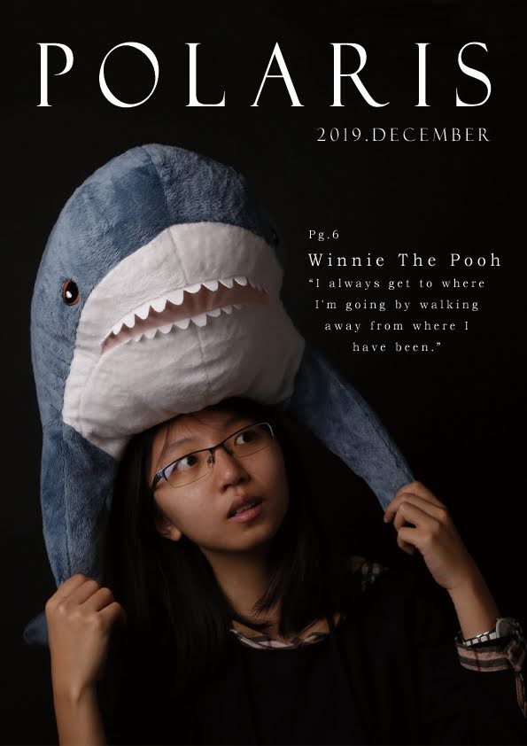
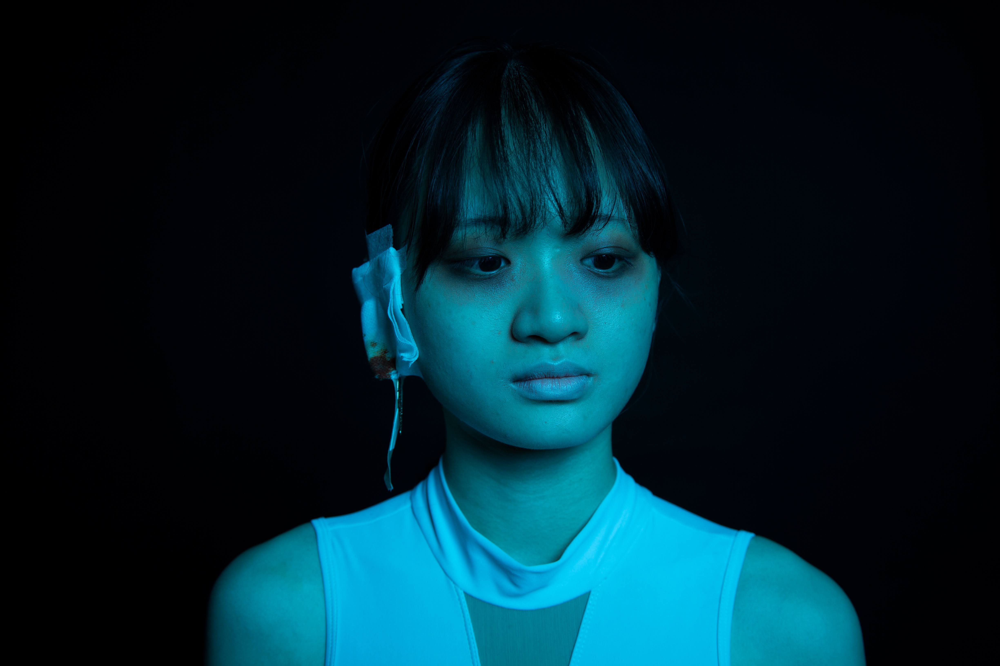
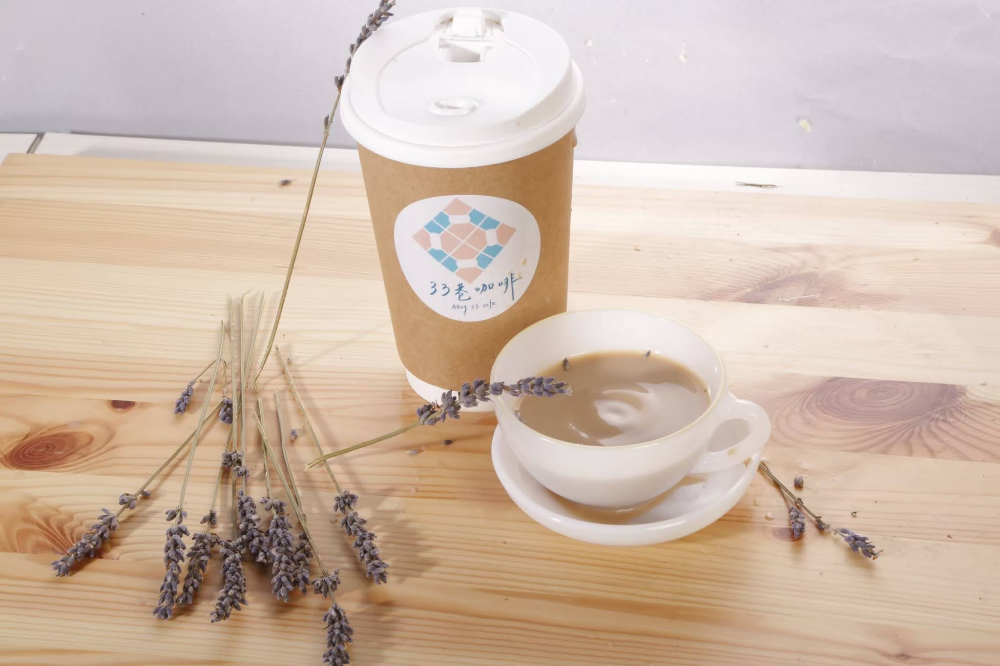
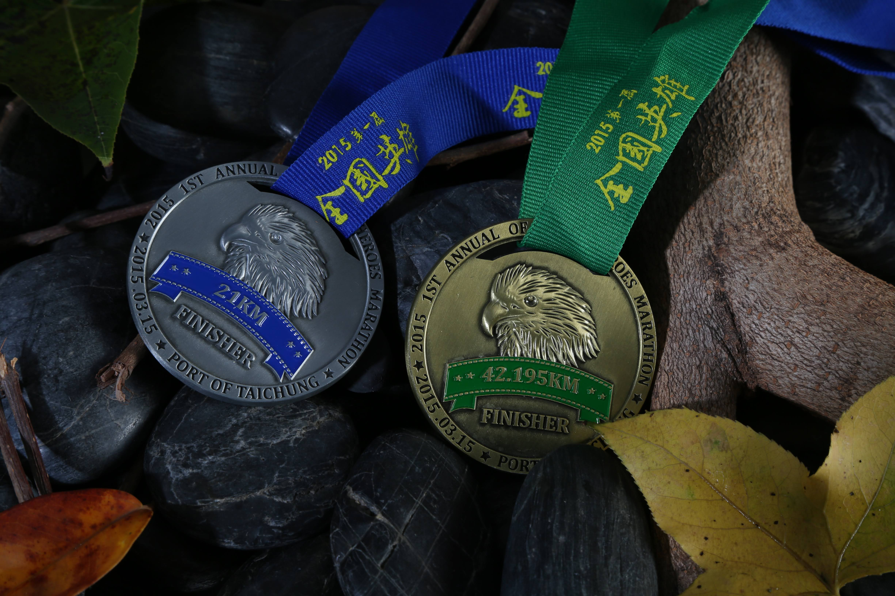

光之縫隙 Light Fragments
概念攝影創作 / 棚燈設計・光影構成


02 / SELECTED WORK
從一束光開始，
到成為有記憶點的畫面。
概念攝影創作 / 棚燈設計・光影構成

人像編輯攝影 / 棚拍執行・版面構成
概念人像創作 / 燈光設計・情境構成

概念人像創作 / 色膠燈光・情緒構圖

概念靜物創作 / 色膠燈光・質感捕捉

商品靜物攝影 / 棚燈配置・質感呈現

商品靜物攝影 / 情境布置・光線設計

商品靜物攝影 / 情境布置・光線設計

商品靜物攝影 / 質感捕捉・細節呈現